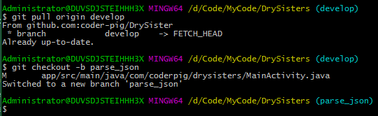
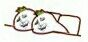

12.6 DrySister看妹子应用(第一版)——6.图标制作，混淆，签名打包，APK瘦身，应用发布
なぜタイトルがこんなに長いのか、もっと短く書けばいいのに、と私に聞かないでください。あなたはたぶん... コードは書き終えたものの、公開後の後続作業はやはり多いんです。タイトルの通り、この節で説明する内容は順に...

12.5 DrySister美少女閲覧アプリ（第1版）——5.コードレビュー、調整とログクラスの作成
1.雑談 お恥ずかしい話ですが、DrySisterの前回の記事からもう1年以上が経ちました。その間に多くの方から「よく書けていますね」「次はいつ更新するんですか？」とこっそりメッセージをいただきましたが、私はだいたい「...」と返信していました。
12.4 DrySister看妹子应用(第一版)——4.添加数据缓存(加入SQLite)
1.雑談 前回はDrySisterのために非同期画像読み込みキャッシュフレームワーク——SisterLoader（妹子ローダー）を作成しました。ネットワークから読み込んだ画像をディスクとメモリにキャッシュすることに成功し、...
12.3 DrySister看妹子应用(第一版)——3.图片加载优化(写个图片缓存小框架)
1.雑談 前回は妹子画像のデータソースをローカルからGankが提供するAPIデータの解析に変更しました。今回の節ではこの画像読み込みクラスを最適化したいと思います。例えば、ローカル画像の表示を追加したり...

12.2 DrySister看妹子应用(第一版)——2.解析后台数据
1.雑談 前回はシンプルなプロジェクトを立ち上げ、リポジトリをGithubにホスティングしました。分析を経て、以下の2点を最適化する必要があると感じました： 1.URLの直書き ->...

12.1Android実践：DrySister美少女閲覧アプリ（第一版） — プロジェクト構築と簡易実装
(この節は非常に簡単で、話のつながりを保つためのものなので、初心者以外はスキップすることをお勧めします！) 1. いくつかの余談： 入門チュートリアルは昨年の11月に書き終わり、今から約9か月以上が経過しました。 ...
1.0.1 2015年最新Android基础入门教程目录
前書き： 『2015年最新Android基礎入門チュートリアル目録』がついに今日をもって幕を閉じました。全チュートリアルは全148節が書き終わり、目録を添付します。チュートリアルの由来について、筆者は...

11.0《2015最新Android基础入门教程》完结散花~
はじめに： 6月末からこのチュートリアルの執筆を始め、約5か月以上の歳月を経て、今日ついに書き終わりました。全チュートリアルの本文部分は148篇、十大章からなり、基本的なUIコントロールから四大コンポーネントまで、Inte...

10.14 Android GPS初涉
この節のイントロダクション： GPSという言葉について言えば、皆さんもご存知だと思います。GPS全地球測位技術ですね。Androidでの測位方式は一般的に次の4つがあります：GPS測位、WIFI測位、基地局測位...

10.12 センサー特集（4）——その他のセンサーについて理解する
この節のイントロダクション： 前の節の最後に述べたように、センサー部分は筆者があまり触れたことがないため、この節では残りのよく使われるいくつかのセンサーを簡単に紹介するだけにします。一般知識として捉えてください。今後使うことがあれば、また...